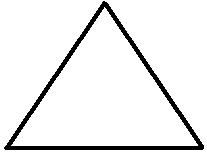

Főoldal
1. Feladat Kollázs
2. Feladat Képlink
3. Feladat Lista
4. Feladat Órarend
5. Feladat CSS
6. Feladat Űrlap
7. Feladat Évszakok
8. Feladat Gomb
9. Feladat Javascript
10 Feladat Kosár
11. Feladat Pitagorasz
12. Feladat Webshop